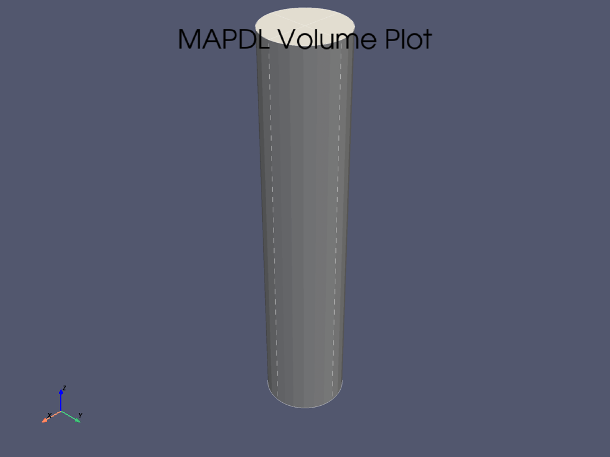
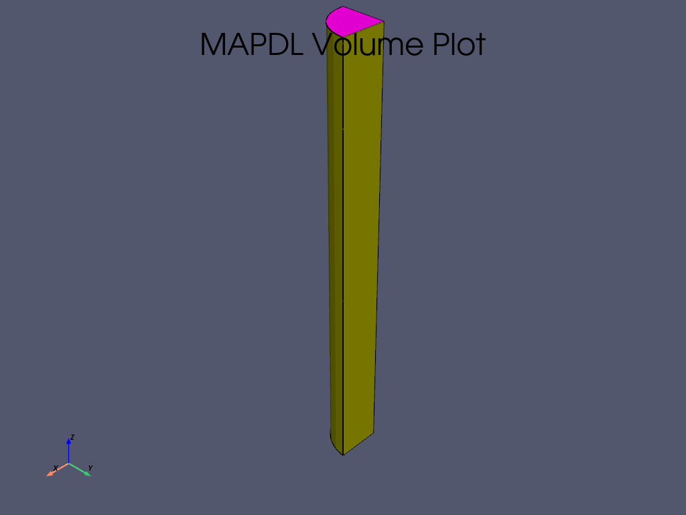
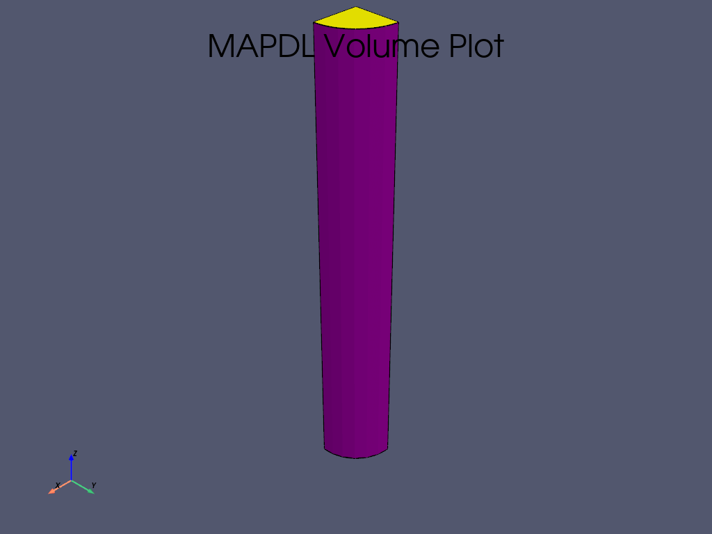
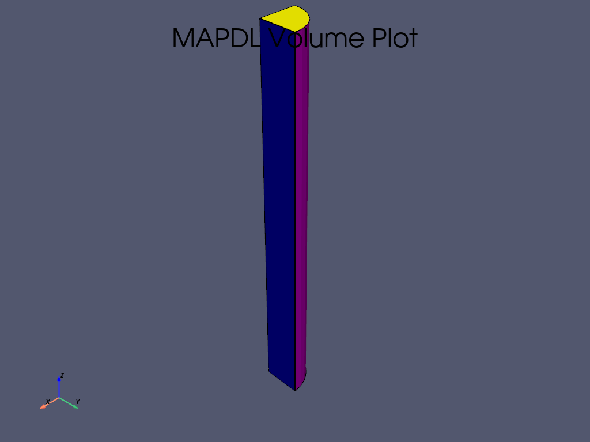
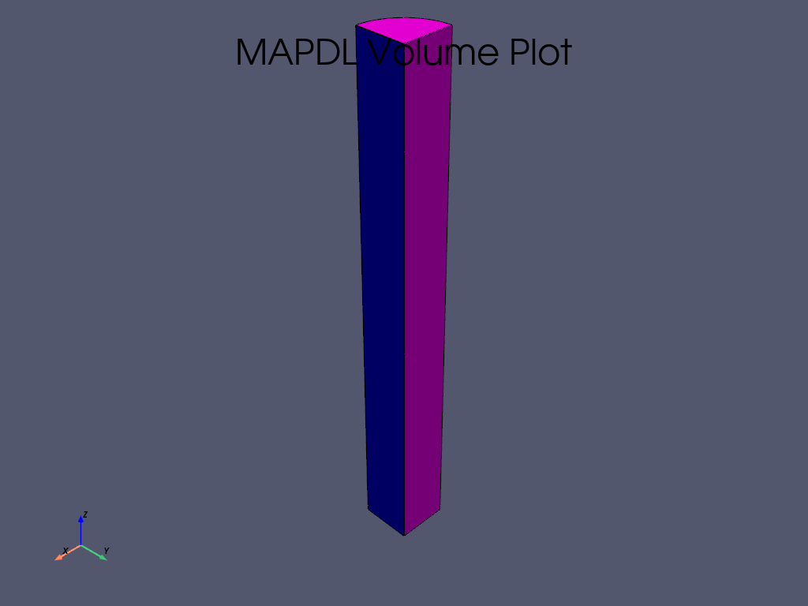
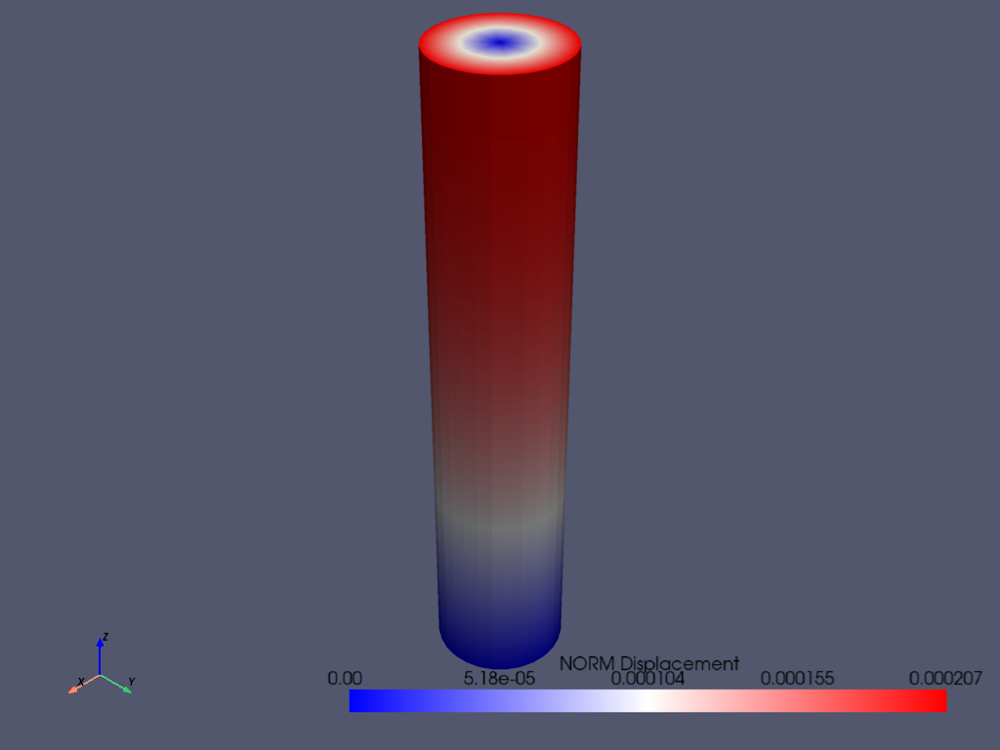
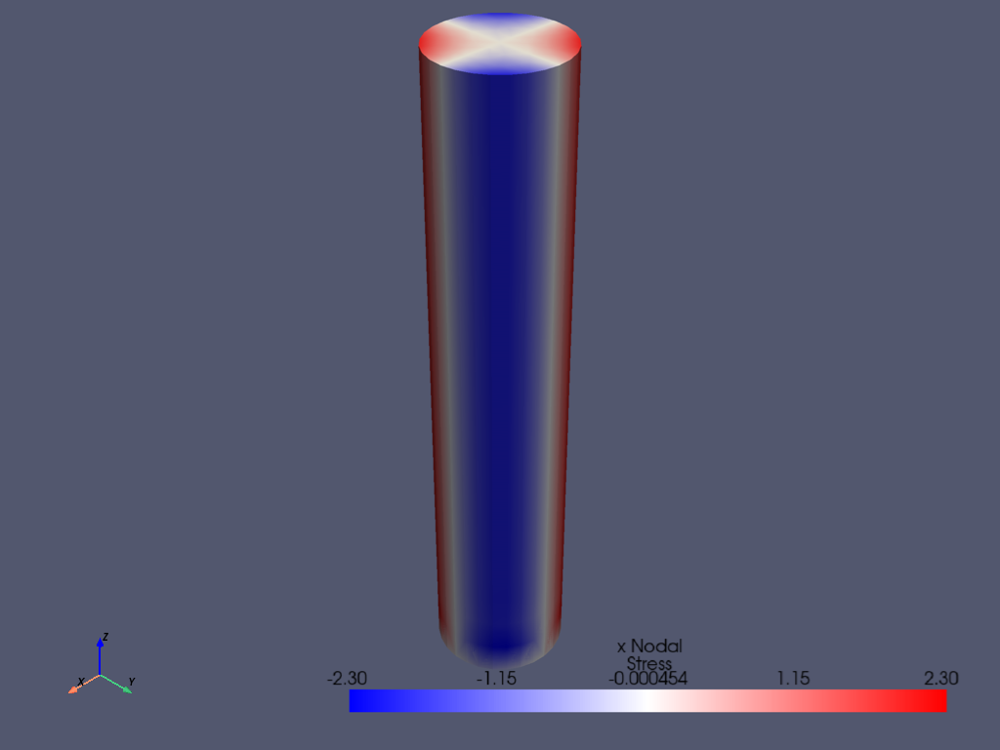
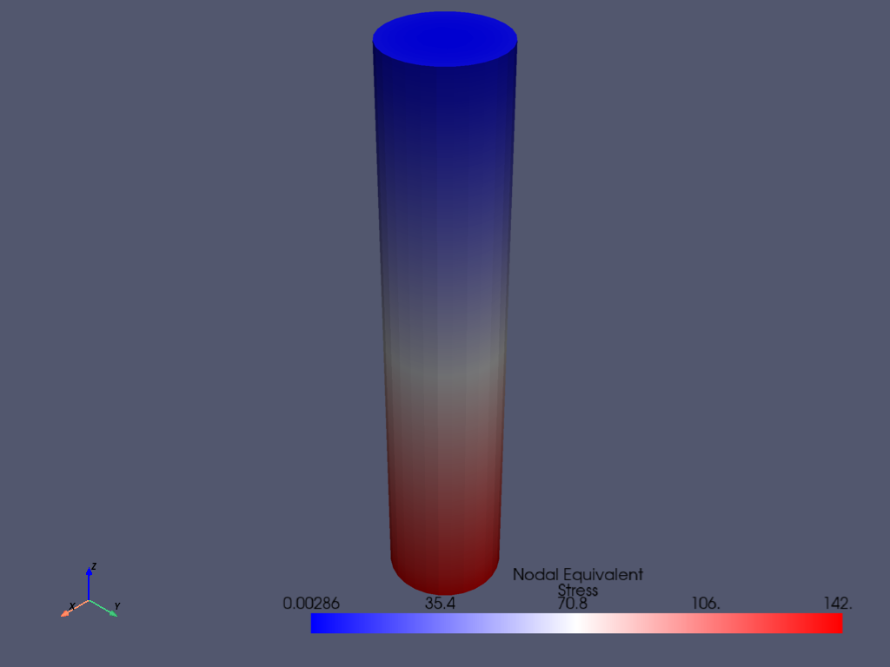
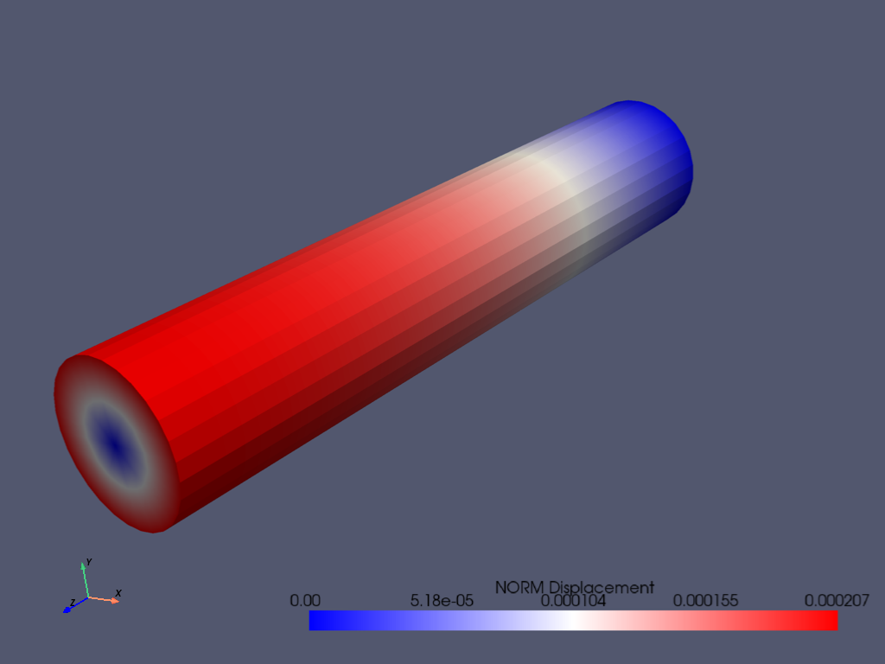
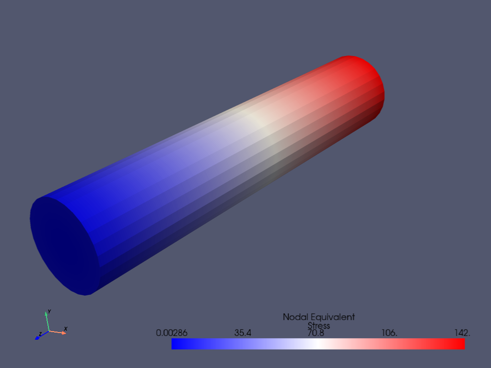

Note
Go to the end to download the full example code.
Torsional load on a bar using SURF154 elements#
This Ansys PyMAPDL script builds a bar and applies torque to it using SURF154 elements. This is a static analysis example.
Script initialization#
import os
import numpy as np
from ansys.mapdl.core import launch_mapdl
# start Ansys in the current working directory with default jobname "file"
mapdl = launch_mapdl(run_location=os.getcwd(), version=23.1)
Define cylinder and mesh parameters
Model creation#
# Define higher-order SOLID186
# Define surface effect elements SURF154 to apply torque
# as a tangential pressure
mapdl.prep7()
mapdl.et(1, 186)
mapdl.et(2, 154)
mapdl.r(1)
mapdl.r(2)
REAL CONSTANT SET 2 ITEMS 1 TO 6
0.0000 0.0000 0.0000 0.0000 0.0000 0.0000
Aluminum properties (or something)
- 
- 
- 
- 
- 
Mesh cylinder
mapdl.lsel("s", "loc", "x", 0)
mapdl.lsel("r", "loc", "y", 0)
mapdl.lsel("r", "loc", "z", 0, height - h_tip)
mapdl.lesize("all", elemsize * 2)
mapdl.mshape(0)
mapdl.mshkey(1)
mapdl.esize(elemsize)
mapdl.allsel("all")
mapdl.vsweep("ALL")
mapdl.csys(1)
mapdl.asel("s", "loc", "z", "", height - h_tip + 0.0001)
mapdl.asel("r", "loc", "x", radius)
mapdl.local(11, 1)
mapdl.csys(0)
mapdl.aatt(2, 2, 2, 11)
mapdl.amesh("all")
mapdl.finish()
# plot elements
mapdl.eplot()
Solution#
mapdl.slashsolu() # Using Slash instead of / due to duplicate SOLU command
mapdl.antype("static", "new")
mapdl.eqslv("pcg", 1e-8)
# Apply tangential pressure
mapdl.esel("s", "type", "", 2)
mapdl.sfe("all", 2, "pres", "", pressure)
# Constrain bottom of cylinder/rod
mapdl.asel("s", "loc", "z", 0)
mapdl.nsla("s", 1)
mapdl.d("all", "all")
mapdl.allsel()
mapdl.psf("pres", "", 2)
mapdl.pbc("u", 1)
mapdl.solve()
***** MAPDL SOLVE COMMAND *****
*** NOTE *** CP = 0.000 TIME= 00:00:00
There is no title defined for this analysis.
*** WARNING *** CP = 0.000 TIME= 00:00:00
It has been detected that you are using reduced integration brick
elements along with the PCG solver (EQSLV,PCG). Please verify that
you have multiple elements through the thickness in your model or
switch to the SPARSE solver (EQSLV,SPARSE).
*** NOTE *** CP = 0.000 TIME= 00:00:00
The model data was checked and warning messages were found.
Please review output or errors file ( ) for these warning messages.
*** SELECTION OF ELEMENT TECHNOLOGIES FOR APPLICABLE ELEMENTS ***
---GIVE SUGGESTIONS ONLY---
ELEMENT TYPE 1 IS SOLID186. KEYOPT(2) IS ALREADY SET AS SUGGESTED.
*****MAPDL VERIFICATION RUN ONLY*****
DO NOT USE RESULTS FOR PRODUCTION
S O L U T I O N O P T I O N S
PROBLEM DIMENSIONALITY. . . . . . . . . . . . .3-D
DEGREES OF FREEDOM. . . . . . UX UY UZ
ANALYSIS TYPE . . . . . . . . . . . . . . . . .STATIC (STEADY-STATE)
EQUATION SOLVER OPTION. . . . . . . . . . . . .PCG
TOLERANCE. . . . . . . . . . . . . . . . . . 1.00000E-08
GLOBALLY ASSEMBLED MATRIX . . . . . . . . . . .SYMMETRIC
*** NOTE *** CP = 0.000 TIME= 00:00:00
Present time 0 is less than or equal to the previous time. Time will
default to 1.
*** WARNING *** CP = 0.000 TIME= 00:00:00
It has been detected that you are using reduced integration brick
elements along with the PCG solver (EQSLV,PCG). Please verify that
you have multiple elements through the thickness in your model or
switch to the SPARSE solver (EQSLV,SPARSE).
*** NOTE *** CP = 0.000 TIME= 00:00:00
The conditions for direct assembly have been met. No .emat or .erot
files will be produced.
D I S T R I B U T E D D O M A I N D E C O M P O S E R
...Number of elements: 2080
...Number of nodes: 7217
...Decompose to 0 CPU domains
...Element load balance ratio = 0.000
L O A D S T E P O P T I O N S
LOAD STEP NUMBER. . . . . . . . . . . . . . . . 1
TIME AT END OF THE LOAD STEP. . . . . . . . . . 1.0000
NUMBER OF SUBSTEPS. . . . . . . . . . . . . . . 1
STEP CHANGE BOUNDARY CONDITIONS . . . . . . . . NO
PRINT OUTPUT CONTROLS . . . . . . . . . . . . .NO PRINTOUT
DATABASE OUTPUT CONTROLS. . . . . . . . . . . .ALL DATA WRITTEN
FOR THE LAST SUBSTEP
*** NOTE *** CP = 0.000 TIME= 00:00:00
The PCG solver has automatically set the level of difficulty for this
model to 2.
*********** PRECISE MASS SUMMARY ***********
TOTAL RIGID BODY MASS MATRIX ABOUT ORIGIN
Translational mass | Coupled translational/rotational mass
0.65094E-01 0.0000 0.0000 | 0.0000 0.65094 -0.13505E-11
0.0000 0.65094E-01 0.0000 | -0.65094 0.0000 -0.10297E-11
0.0000 0.0000 0.65094E-01 | 0.13505E-11 0.10297E-11 0.0000
------------------------------------------ | ------------------------------------------
| Rotational mass (inertia)
| 8.7442 -0.69065E-09 0.10297E-10
| -0.69065E-09 8.7442 -0.13505E-10
| 0.10297E-10 -0.13505E-10 0.13019
TOTAL MASS = 0.65094E-01
The mass principal axes coincide with the global Cartesian axes
CENTER OF MASS (X,Y,Z)= -0.15819E-10 0.20747E-10 10.000
TOTAL INERTIA ABOUT CENTER OF MASS
2.2349 -0.69065E-09 0.13444E-15
-0.69065E-09 2.2349 0.10083E-16
0.13444E-15 0.10083E-16 0.13019
The inertia principal axes coincide with the global Cartesian axes
*** MASS SUMMARY BY ELEMENT TYPE ***
TYPE MASS
1 0.650935E-01
Range of element maximum matrix coefficients in global coordinates
Maximum = 13418503.5 at element 0.
Minimum = 7047120.98 at element 0.
*** ELEMENT MATRIX FORMULATION TIMES
TYPE NUMBER ENAME TOTAL CP AVE CP
1 1520 SOLID186 0.000 0.000000
2 560 SURF154 0.000 0.000000
Time at end of element matrix formulation CP = 0.
*** ELEMENT RESULT CALCULATION TIMES
TYPE NUMBER ENAME TOTAL CP AVE CP
1 1520 SOLID186 0.000 0.000000
2 560 SURF154 0.000 0.000000
*** NODAL LOAD CALCULATION TIMES
TYPE NUMBER ENAME TOTAL CP AVE CP
1 1520 SOLID186 0.000 0.000000
2 560 SURF154 0.000 0.000000
*** LOAD STEP 1 SUBSTEP 1 COMPLETED. CUM ITER = 1
*** TIME = 1.00000 TIME INC = 1.00000 NEW TRIANG MATRIX
Post-processing#
# Enter post-processor
mapdl.post1()
# Select the step you want to analyse
mapdl.set(1, 1)
USE LOAD STEP 1 SUBSTEP 1 FOR LOAD CASE 0
SET COMMAND GOT LOAD STEP= 1 SUBSTEP= 1 CUMULATIVE ITERATION= 1
TIME/FREQUENCY= 1.0000
TITLE=
Access element results as arrays
nodal_stress = mapdl.post_processing.nodal_stress_intensity()
elem_stress = mapdl.post_processing.element_stress("int")
print("Nodal stress : ", nodal_stress)
print("Element stress : ", elem_stress)
Nodal stress : [1.40047697 1.24142236 1.70599272 ... 0. 0. 0. ]
Element stress : [139.73499419 132.17428078 124.98840804 ... 0. 0.
0. ]
Plot interactively#
mapdl.post_processing.plot_nodal_displacement(cmap="bwr")
mapdl.post_processing.plot_nodal_component_stress("x", cmap="bwr")
mapdl.post_processing.plot_nodal_eqv_stress(cmap="bwr")
- 
- 
- 
Plot non-interactively#
# Setting up the correct camera angle
cpos = [
(20.992831318277517, 9.78629316586435, 31.905115108541928),
(0.35955395443745797, -1.4198191001571547, 10.346158032932495),
(-0.10547549888485548, 0.9200673323892437, -0.377294345312956),
]
mapdl.post_processing.plot_nodal_displacement(
cmap="bwr", cpos=cpos, savefig="cylinder_disp.png"
)
mapdl.post_processing.plot_nodal_component_stress(
"x", cmap="bwr", cpos=cpos, savefig="cylinder_comp_stx.png"
)
mapdl.post_processing.plot_nodal_eqv_stress(
cmap="bwr", cpos=cpos, savefig="cylinder_eqv_st.png"
)
- 

- 
Stop MAPDL
mapdl.finish()
mapdl.exit()
Total running time of the script: (0 minutes 7.341 seconds)